シフトを管理する
勤務形態がシフト制の従業員がいる場合、［シフト管理］メニューから勤務シフトを作成・管理できます。
［シフト管理］をクリックすると以下のサブメニューが表示されます。
［シフト取込］
エクセルで作成したシフト表を勤怠RECOに取り込みます。
詳しくは、「シフトを取り込む」を参照してください。
［シフト編集］
勤怠RECOに取り込んだシフトテンプレートに従業員を追加したり、シフトを修正したりします。
詳しくは、「シフトを編集する」を参照してください。
［シフト実績出力］
毎月度のシフトの予実管理ができます。シフト登録時の勤務形態と実際に勤務した勤務形態を並べて出力できます。
詳しくは、「シフトの実績をダウンロードする」を参照してください。
シフトを取り込む
勤怠RECOのシフトテンプレートを使用して作成したシフト表を取り込みます。
-
［シフト管理］をクリックし、［シフト取込］をクリックする
「シフト取込」画面が表示されます。
-
デフォルトテンプレートを使用してシフトを作成する場合はダウンロードする
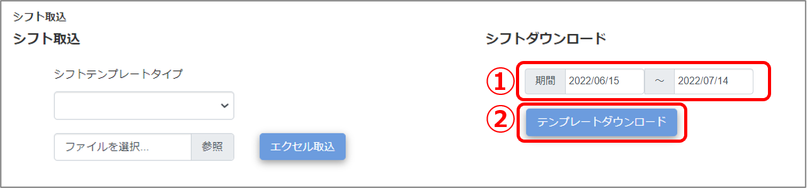
作成したいシフトの期間をカレンダーから選択します。最大1カ月分を指定できます。
-
［テンプレートダウンロード］ボタンをクリックします。
-
ダウンロードしたデフォルトシフトテンプレートを編集する
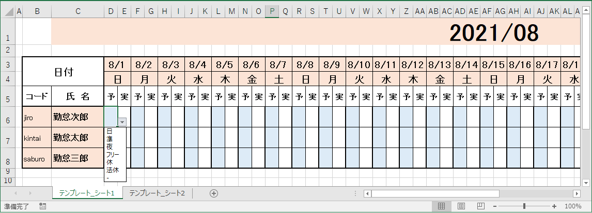
「テンプレート_シート1」で、「予」の項目をドロップダウンリストから入力します。
「テンプレート_シート2」には、勤務形態マスタで登録したシフト制の勤務形態略称、および「法休」「休」が表示され、シート1のドロップダウンリスト選択肢になります。
すべての日付の「予」項目を入力したら、テンプレートを保存します。
ご注意 |
月日のセルには、年月日をyyyy/mm/dd形式で正しくご入力ください。
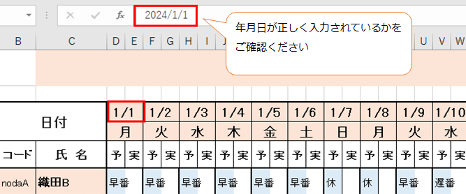
|
-
作成したシフト表を取り込む
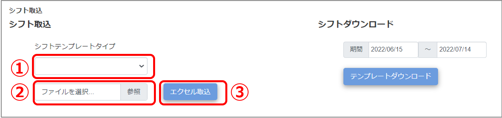
デフォルトテンプレート以外を取り込む場合、ドロップダウンリストから作成に利用したシフト表のテンプレートタイプを選択します。デフォルトテンプレートを取り込む場合は選択不要です。
-
「参照」をクリックして作成したシフト表データを選択します。
-
［エクセル取込］ボタンをクリックします。
画面上部に「シフトの取込が完了しました。」とメッセージが表示され、取り込んだシフトが登録されます。
ご注意 |
デフォルトテンプレートではなく自社独自のテンプレートを使用する場合、日付は必ず「yyyy/mm/dd」形式でご入力ください。
「mm/dd」形式で入力されると、正常に取り込めない場合があります。 年月、曜日などのデータが含まれるセルには、数式を使用したセル参照や関数入力せず、固定値を入力してください。 従業員コードが空白のデータが存在すると、その後方のデータは取込対象外となりますのでご注意ください。 拡張子はxlsxのみ対応しております。 |
ヒント |
手順４.作成したシフト表を取り込む の「①シフトテンプレートタイプ」で選択したテンプレートは、その月のシフトテンプレートとして登録され、［シフト編集］画面の検索条件に指定して検索できるようになります。
|
シフトを編集する
勤怠RECOに取り込んだシフトを編集でき、シフトを作成することもできます。
-
［シフト管理］をクリックし、［シフト編集］をクリックする
「シフト編集」画面が表示されます。
-
いつのシフトを編集するのか「期間」を指定する
カレンダーから開始日と終了日を選択します。最大1カ月分を指定できます。
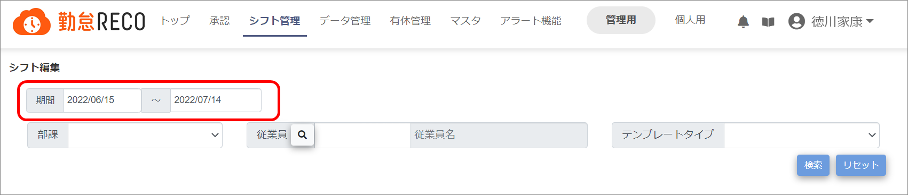
-
必要に応じて、シフトを表示させるための検索条件を設定する
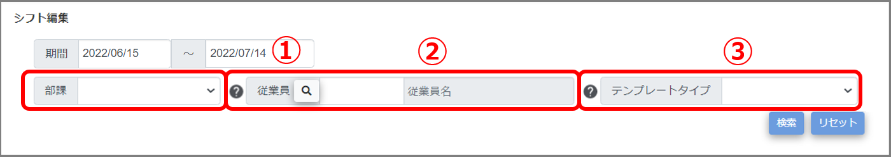
-
部課
ドロップダウンリストから所属部署を選択します。
-
従業員
 をクリックすると、従業員コードのリストが表示されます。従業員の○をクリックすると、リストが閉じて画面に従業員名が表示されます。
をクリックすると、従業員コードのリストが表示されます。従業員の○をクリックすると、リストが閉じて画面に従業員名が表示されます。
-
テンプレートタイプ
その月のシフトテンプレートとして設定されたテンプレートタイプを選択します。
ヒント |
検索を実行すると、設定した検索条件が記憶されます。［リセット］ボタンをクリックすると、設定した検索条件をすべてリセットできます。 |
-
［検索］ボタンをクリックする
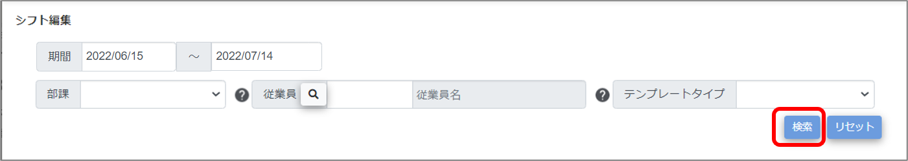
シフトデータが表示されます。
-
シフトを編集する
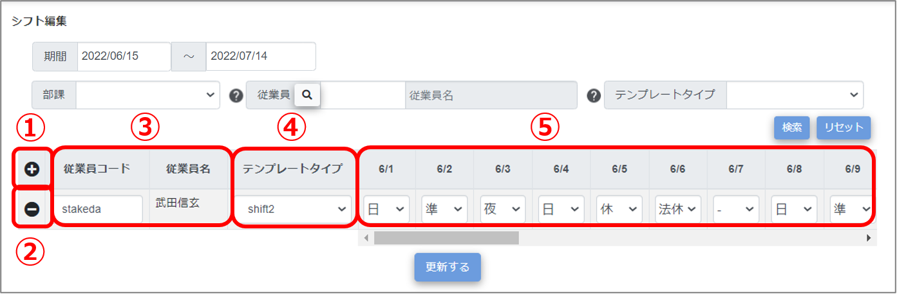
-

シフトデータの入力行を追加します。従業員をシフトに追加する場合は行を追加して編集してください。
-

シフトデータの入力行を削除します。
-
従業員コードと従業員名
従業員コードを入力すると、従業員名が表示されます。
-
テンプレートタイプ
検索した「年月」のテンプレートタイプを変更する場合は、ドロップダウンリストから選択します。
-
シフト記入欄
日付の下にシフトを入力します。シフトはドロップダウンリストから選択します。
ドロップダウンリストには、勤務形態マスタで登録したシフト制の勤務形態略称、および「法休」「休」「-」が表示されます。
※「-」は勤怠予定がないことを意味します。休職期間、入社日以前、退社日以降の日付にご使用ください。
ご注意 |
シフトに追加できる従業員は、出勤パターンが「シフト制」の従業員のみです。従業員コードを入力しても従業員名が表示されない場合は、［従業員マスタ］から該当の従業員の「シフト制フラグ」をシフト制に変更してください。 |
-
［更新］ボタンをクリックする
入力したシフト情報をマスタデータに登録します。
シフトの実績をダウンロードする
勤怠RECOで登録したシフトをエクセルデータでダウンロードします。
ご注意 |
シフトの実績をダウンロードできるのは、承認者アカウント、課長級アカウント、人事担当者アカウント、システム管理者アカウントです。 |
-
［シフト管理］をクリックし、［シフト実績出力］をクリックする
「シフト実績出力」画面が表示されます。
-
ダウンロードしたいシフトのテンプレートタイプを選択する
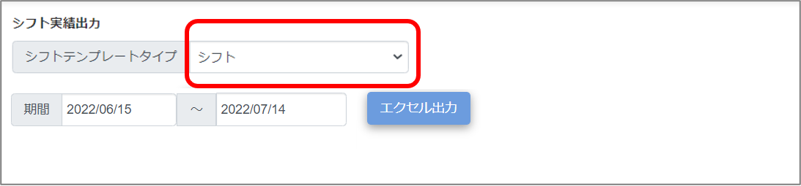
［マスタ］＞［共通マスタ］メニューで「デフォルトシートテンプレート」を「使用する」にした場合は、テンプレートタイプの選択は不要です。
-
ダウンロードしたいシフトの期間を選択する
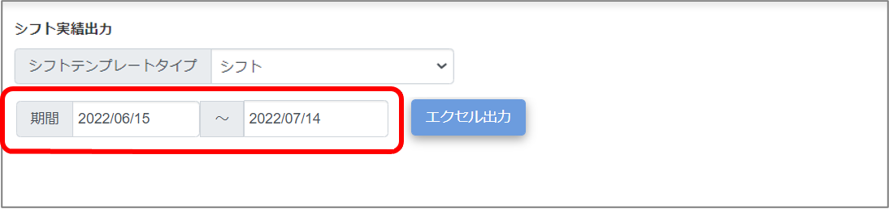
最大1カ月分を指定できます。
-
［エクセル出力］ボタンをクリックする
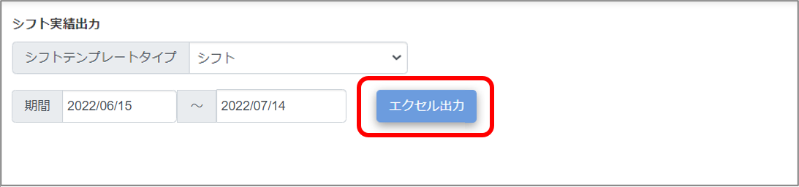
シフトがダウンロードされます。